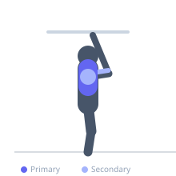

Exercise guide / Behind-the-Neck Lat Pulldown
Behind-the-Neck Lat Pulldown
The behind-the-neck lat pulldown pulls the bar down behind the head to touch the base of the neck. While it creates a different angle of lat engagement and places greater emphasis on the rear deltoid and rhomboids, this exercise places the shoulder joint in an impingement-prone position and is contraindicated for individuals with shoulder or cervical spine issues. It should only be performed by experienced trainees with demonstrated shoulder mobility.
Primary muscles
latissimus dorsi
rhomboid major
Secondary muscles
deltoid posterior
trapezius middle
biceps brachii long head
Stabilizers
teres major
Equipment
Lat Pulldown Machine


Starting position
- Sit at a lat pulldown machine with a wide-grip bar attachment. Grip the bar with an overhand grip 4-6 inches wider than shoulder width. Lean the torso slightly forward and tuck the chin to the chest.
Setup
- Secure thighs under the pads. Set an appropriate weight. Tuck the chin before each repetition.
Steps
- Step 1: Grip the bar wide with an overhand grip.
- Step 2: Tuck the chin firmly to the chest before initiating the movement.
- Step 3: Pull the bar downward and behind the head, aiming to touch the base of the neck.
- Step 4: Squeeze the shoulder blades together at the bottom position.
- Step 5: Return the bar under control to full arm extension.
Coaching cues
- Chin tucked before every rep
- Bar to the base of the skull, not lower
- Retract shoulder blades at the bottom
Breathing
- Exhale on the pull, inhale on the return.
Range of motion
- Full arm extension at top to bar touching the base of the neck at the bottom.
Tempo
- 2-1-2-0
Common mistakes
- Not tucking the chin, risking impact with the cervical vertebrae
- Using excessive weight, forcing poor positioning
- Pulling too aggressively with shoulder impingement concerns
Safety
- Not recommended for individuals with shoulder impingement, rotator cuff issues, or cervical spine problems
- Always tuck the chin before each repetition
- Many coaches recommend the standard front pulldown as a safer alternative with comparable lat activation
Training
- strength: 6–10 reps
- hypertrophy: 10–15 reps
- strength: 3–4 sets
- hypertrophy: 3–4 sets
- Rest: {'strength': 120, 'hypertrophy': 90}